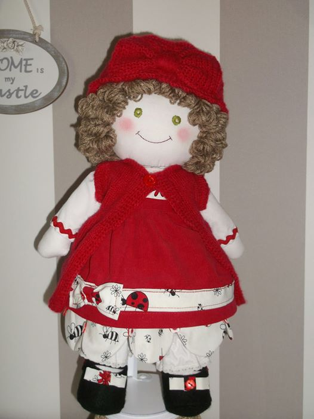

Galerie Poupées et Sujets

Poupée en Chiffon Rouge
- Visage et corps cousus en coton blanc bourrés à la ouate
- Traits du visage brodés à la main au fil DMC
- Jupe en velours "Mille Raies" rouge
- Ruban motif coccinelle blanc cassé
- Souliers noirs en feutrine
- Cheveux bouclés en laine acrylique
- Chapeau et gilet en laine acrylique
- Envergure d'environ 40cm

Poupée en Chiffon Violette
- Visage et corps cousus en coton blanc bourrés à la ouate
- Traits du visage brodés à la main au fil DMC
- Robe à motif fleuri gris sur fond blanc confectionnée dans du tissu Liberty
- Cheveux violets en laine acrylique
- Souliers en cuir artificiel blanc
- Envergure d'environ 40cm

Petit Sujet en Tissu Blanc
- Sujet inspiré des jouets culbuto dans sa forme
- Corps blanc en coton et tissu feutre orné de dentelle et bourré à la ouatine
- Cheveux en laine blanche de type "neige"
- Visage en boule de polystyrène dessiné au stylo à tissu
- Envergure d'environ 15cm

Petit Sujet en Tissu Bleu
- Sujet inspiré des jouets culbuto dans sa forme
- Corps en coton bleu bourré à la ouatine
- Cheveux en laine bleue
- Visage en boule de polystyrène dessiné au stylo à tissu
- Envergure d'environ 15cm